Things are moving so fast we really don’t know what’s going to happen.
Naveen Selvadurai, cofounder of Foursquare
Let’s say that you’re doing your economics homework, trying to calculate the effect of the recession on room rates in Fort Lauderdale.This vignette is based on the following sources: Diane Brady, “Social Media’s New Mantra: Location, Location, Location,” Bloomberg BusinessWeek, May 6, 2010, http://www.businessweek.com/magazine/content/10_20/b4178034154012.htm (accessed May 13, 2010); Arik Hesseldahl, “Foursquare Tries Broadening Its Appeal,” Bloomberg BusinessWeek, April 19, 2010, http://www.businessweek.com/technology/content/apr2010/tc20100416_035687.htm (accessed May 13, 2010); Foursquare, http://foursquare.com (accessed May 13, 2010). For some reason, you get a sinking feeling that your friends are out somewhere having fun without you. What’s a quick way to find out where they are and what they’re up to? If you’re signed up, you can “check in” with the Foursquare app on your smartphone, tablet PC, or whatever device you use to connect to a wireless network. Foursquare is a mobile social network, and in addition to the handy “friend finder” feature, you can use it to find new and interesting places around your neighborhood to do whatever you and your friends like to do. It even rewards you for doing business with sponsor companies, such as local restaurants.
Foursquare, which has been getting a lot of buzz lately, was started in 2009 by two young entrepreneurs, Dennis Crowley and Naveen Selvadurai. It’s already attracted more than a million users, and Crowley and Selvadurai are understandably enthusiastic about their prospects. Not everybody, however, is as optimistic as they are. Right now, Foursquare is bringing in money and growing, but let’s face facts—it’s a start-up and it’s barely two years old. Among the experts who pay attention to the business of software apps, Foursquare has both optimists and skeptics, and, as usual, there a lot of people who think that Crowley and Selvadurai should take the money and run—that is, sell out to a larger company and move on.
Clearly, Crowley and Selvadurai have some questions to answer and—at some point, if not necessarily right now—decisions to make. This is where they’ll have to rely on an accountant, because they’ll need somebody with a knowledge of accounting to help them ask and answer the right questions and formulate and make the right decisions: How much revenue are we bringing in? Can we increase it? What are our expenses? Will they continue to get higher or can we cut them? How much money are we actually making? Are we operating at a profit or a loss? How much do we have invested in the company? How much debt do we have? Can we pay our bills on time? If we need more money, where can we get it? How much cash do we have on hand? How much cash comes in each month and how much goes out? How long will it last? How much is our business really worth? If we decide to sell it, how much should we ask for it? Is it a good idea to put more of our own money into the venture? What are the odds that Foursquare will succeed?
In this chapter, we’ll learn how to gather, summarize, and interpret accounting information and how to use it in making business decisions like the ones facing Crowley and Selvadurai.
Accounting is often called “the language of business.” Why? Because it communicates so much of the information that owners, managers, and investors need to evaluate a company’s financial performance. These people are all stakeholdersParties who are interested in the activities of a business because they’re affected by them. in the business—they’re interested in its activities because they’re affected by them. In fact, the purpose of accounting is to help stakeholders make better business decisions by providing them with financial information. Obviously, you wouldn’t try to run an organization or make investment decisions without accurate and timely financial information, and it’s the accountant who prepares this information. More importantly, accountants make sure that stakeholders understand the meaning of financial information, and they work with both individuals and organizations to help them use financial information to deal with business problems. Actually, collecting all the numbers is the easy part—today, all you have to do is start up your accounting software. The hard part is analyzing, interpreting, and communicating the information. Of course, you also have to present everything clearly while effectively interacting with people from every business discipline. In any case, we’re now ready to define accountingSystem for measuring and summarizing business activities, interpreting financial information, and communicating the results to management and other decision makers. as the process of measuring and summarizing business activities, interpreting financial information, and communicating the results to management and other decision makers.
Accountants typically work in one of two major fields. Management accountants provide information and analysis to decision makers inside the organization in order to help them run it. Financial accountants furnish information to individuals and groups both inside and outside the organization in order to help them assess its financial performance.
In other words, management accounting helps you keep your business running while financial accounting tells you how well you’re running it.
Management accountingBranch of accounting that provides information and analysis to decision makers inside the organization to help them operate the business. plays a key role in helping managers carry out their responsibilities. Because the information that it provides is intended for use by people who perform a wide variety of jobs, the format for reporting information is flexible. Reports are tailored to the needs of individual managers, and the purpose of such reports is to supply relevant, accurate, timely information in a format that will aid managers in making decisions. In preparing, analyzing, and communicating such information, accountants work with individuals from all the functional areas of the organization—human resources, operations, marketing, and finance.
Financial accountingBranch of accounting that furnishes information to individuals and groups both inside and outside the organization to help them assess the firm’s financial performance. is responsible for preparing the organization’s financial statementsFinancial reports—including the income statement, the balance sheet, and the statement of cash flows—that summarize a company’s past performance and evaluate its financial health.—including the income statement, the statement of owner’s equity, the balance sheet, and the statement of cash flows—that summarize a company’s past performance and evaluate its current financial condition. In preparing financial statements, financial accountants adhere to a uniform set of rules called generally accepted accounting principles (GAAP)Uniform set of rules for financial reporting issued by an independent agency called the Financial Accounting Standards Board (FASB).—the basic principles for financial reporting issued by an independent agency called the Financial Accounting Standards Board (FASB). Users want to be sure that financial statements have been prepared according to GAAP because they want to be sure that the information reported in them is accurate. They also know that they can compare the statements issued by one company to those of another company in the same industry.
While companies headquartered in the United States follow U.S.-based GAAP, many companies located outside the United States follow a different set of accounting principles called International Financial Reporting Standards (IFRS)A set of worldwide accounting rules and guidelines used by companies to prepare financial statements that can be compared with those of other countries.. These multinational standards, which are issued by the International Accounting Standards Board (IASB), differ from U.S. GAAP in a number of important ways. IFRS, for example, is a little stricter about the ways you can calculate the costs of inventory, but we’re not going to dwell unnecessarily on such fine distinctions. Bear in mind, however, that, according to most experts, a single set of worldwide standards will eventually emerge to govern the accounting practices of both U.S. and non-U.S. companies.
The users of managerial accounting information are pretty easy to identify—basically, they’re a firm’s managers. We need to look a little more closely, however, at the users of financial accounting information, and we also need to know a little more about what they do with the information that accountants provide them.
In summarizing the outcomes of a company’s financial activities over a specified period of time, financial statements are, in effect, report cards for owners and managers. They show, for example, whether the company did or didn’t make a profit and furnish other information about the firm’s financial condition. They also provide information that managers and owners can use in order to take corrective action.
If you loaned money to a friend to start a business, wouldn’t you want to know how the business was doing? Investors and creditors furnish the money that a company needs to operate, and not surprisingly, they feel the same way. Because they know that it’s impossible to make smart investment and loan decisions without accurate reports on an organization’s financial health, they study financial statements to assess a company’s performance and to make decisions about continued investment.
According to the world’s most successful investor (and third-richest individual), Warren Buffett, the best way to prepare yourself to be an investor is to learn all the accounting you can. Buffett, chairman and CEO of Berkshire Hathaway, a company that invests in other companies, turned an original investment of $10,000 into a net worth of $35 billion in four decades, and he did it, in large part, by paying close attention to financial accounting reports.John Price, “The Return of the Buffetteers,” Investor Journal, August 1998, http://www.sherlockinvesting.com (accessed July 17, 2010).
Figure 12.2 Warren Buffet
Photo by Kevin Parry/WireImage/Getty Images
Businesses are required to furnish financial information to a number of government agencies. Publicly owned companies, for example—the ones whose shares are traded on a stock exchange—must provide annual financial reports to the Securities and Exchange Commission (SEC), a federal agency that regulates stock trades. Companies must also provide financial information to local, state, and federal taxing agencies, including the Internal Revenue Service.
A number of other external users have an interest in a company’s financial statements. Suppliers, for example, need to know if the company to which they sell their goods is having trouble paying its bills or may even be at risk of going under. Employees and labor unions are interested because salaries and other forms of compensation are dependent on an employer’s performance.
Figure 12.3 "Management and Financial Accounting" summarizes the main differences between the users of management and financial accounting and the types of information issued by accountants in the two areas. In the rest of this chapter, we’ll learn how to prepare a set of financial statements and how to interpret them. We’ll also discuss issues of ethics in the accounting communities and career opportunities in the accounting profession.
Figure 12.3 Management and Financial Accounting
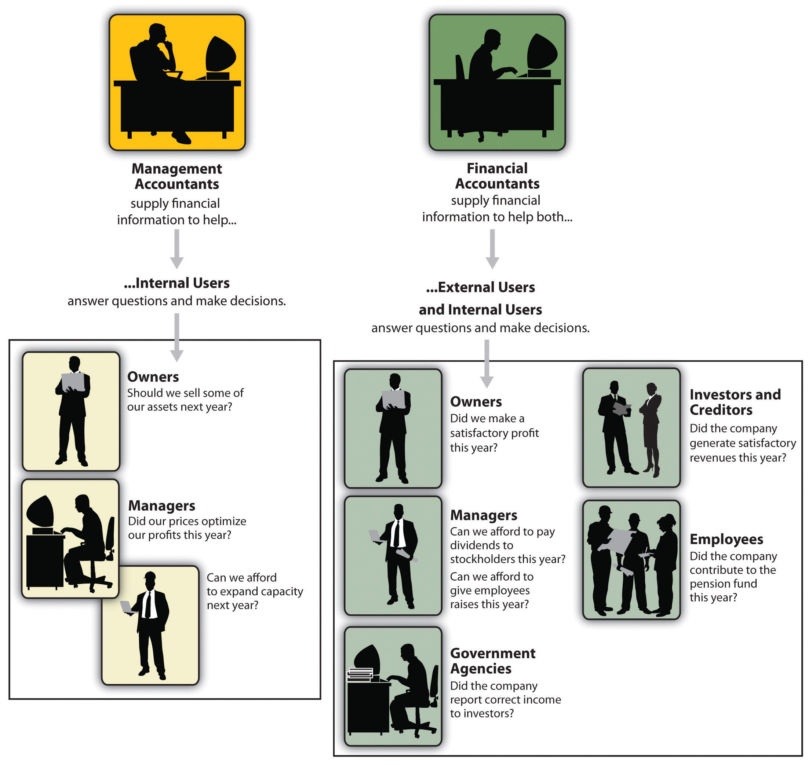Accounting can be divided into two major fields:
U.S. and non-U.S. companies follow different sets of standards in preparing financial accounting reports:
We hope that, so far, we’ve made at least one thing clear: If you’re in business, you need to understand financial statements. For one thing, the law no longer allows high-ranking executives to plead ignorance or fall back on delegation of authority when it comes to taking responsibility for a firm’s financial reporting. In a business environment tainted by episodes of fraudulent financial reporting and other corporate misdeeds, top managers are now being held accountable (so to speak) for the financial statements issued by the people who report to them. For another thing, top managers need to know if the company is hitting on all cylinders or sputtering down the road to bankruptcy. To put it another way (and to switch metaphors): if he didn’t understand the financial statements issued by the company’s accountants, an executive would be like an airplane pilot who doesn’t know how to read the instrument in the cockpit—he might be able keep the plane in the air for a while, but he wouldn’t recognize any signs of impending trouble until it was too late.
Put yourself in the place of the woman in Figure 12.4 "What Connie Wants to Know". She runs Connie’s Confections out of her home. She loves what she does, and she feels that she’s doing pretty well. In fact, she has an opportunity to take over a nearby store at very reasonable rent, and she can expand by getting a modest bank loan and investing some more of her own money. So it’s decision time for Connie: She knows that the survival rate for start-ups isn’t very good, and before taking the next step, she’d like to get a better idea of whether she’s actually doing well enough to justify the risk. As you can see, she has several pertinent questions. We aren’t privy to Connie’s finances, but we can tell her how basic financial statements will give her some answers.We’ll discuss the statement of cash flows later in the chapter.
Figure 12.4 What Connie Wants to Know
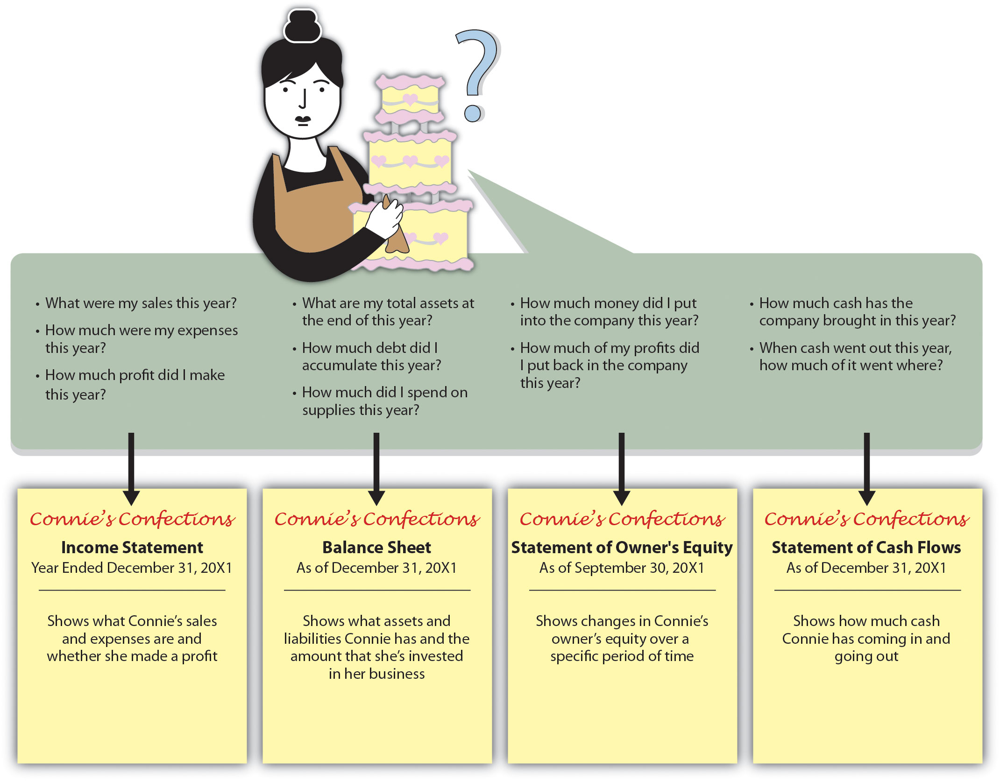We know what you’re thinking: It’s nice to know that accounting deals with real-life situations, but while you wish Connie the best, you don’t know enough about the confectionary business to appreciate either the business decisions or the financial details. Is there any way to bring this lesson a little closer to home? Besides, while knowing what financial statements will tell you is one thing, you want to know how to prepare them.
Agreed. So let’s assume that you need to earn money while you’re in college and that you’ve decided to start a small business. Your business will involve selling stuff to other college students, and to keep things simple, we’ll assume that you’re going to operate on a “cash” basis: you’ll pay for everything with cash, and everyone who buys something from you will pay in cash.
A Word about Cash. You probably have at least a little cash on you right now—some currency, or paper money, and coins. In accounting, however, the term cash refers to more than just paper money and coins. It also refers to the money that you have in checking and savings accounts and includes items that you can deposit in these accounts, such as money orders and different types of checks.
Your first task is to decide exactly what you’re going to sell. You’ve noticed that with homework, exams, social commitments, and the hectic lifestyle of the average college student, you and most of the people you know always seem to be under a lot of stress. Sometimes you wish you could just lie back between meals and bounce a ball off the wall. And that’s when the idea hits you: Maybe you could make some money by selling a product called the “Stress-Buster Play Pack.” Here’s what you have in mind: you’ll buy small toys and other fun stuff—instant stress relievers—at a local dollar store and pack them in a rainbow-colored plastic treasure chest labeled “Stress-Buster.”
And here’s where you stand: You have enough cash to buy a month’s worth of plastic treasure chests and toys. After that, you’ll use the cash generated from sales of Stress-Buster Play Packs to replenish your supply. Each plastic chest will cost $1.00, and you’ll fill each one with a variety of five of the following toys, all of which you can buy for $1.00 each:
You plan to sell each Stress-Buster Play Pack for $10 from a rented table stationed outside a major dining hall. Renting the table will cost you $20 a month. Because your own grades aren’t what your parents and the dean would like them to be, you decide to hire fellow students (trustworthy people with better grades than yours) to staff the table at peak traffic periods. They’ll be on duty from noon until 2:00 p.m. each weekday, and you’ll pay them $6 an hour. Wages, therefore, will cost you $240 a month (2 hours × 5 days × 4 weeks = 40 hours × $6). Finally, you’ll run ads in the college newspaper at a monthly cost of $40. Thus your total monthly costs will amount to $300 ($20 + $240 + $40).
Let’s say that during your first month, you sell one hundred play packs. Not bad, you say to yourself, but did I make a profit? To find out, you prepare an income statementFinancial statement summarizing a business’s revenues, expenses, and net income. showing revenuesAmount of money earned by selling products to customers., or sales, and expensesCosts incurred by selling products to customers.—the costs of doing business. You divide your expenses into two categories:
Now you need to do a little subtracting:
Figure 12.5 "Income Statement for Stress-Buster Company" is your income statement for the first month. (Remember that we’ve made things simpler by handling everything in cash.)
Figure 12.5 Income Statement for Stress-Buster Company
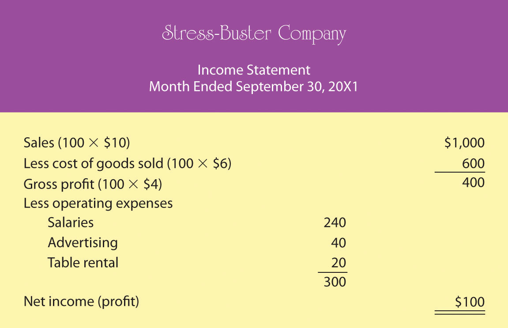What does your income statement tell you? It has provided you with four pieces of valuable information:
You’re quite relieved to see that you made a profit during your first month, but you can’t help but wonder what you’ll have to do to make even more money next month. You consider three possibilities:
In order to consider these possibilities fully, you need to generate new income statements for each option. And to do that, you’ll have to play a few “what-if” games. Because possibility #1—packaging four toys instead of five—is the most appealing, you start there. Your cost of goods sold would go down from $6 to $5 per unit (4 toys at $1 each + 1 plastic treasure chest at $1). Figure 12.6 "Proposed Income Statement Number One for Stress-Buster Company" is your hypothetical income statement if you choose this option.
Figure 12.6 Proposed Income Statement Number One for Stress-Buster Company
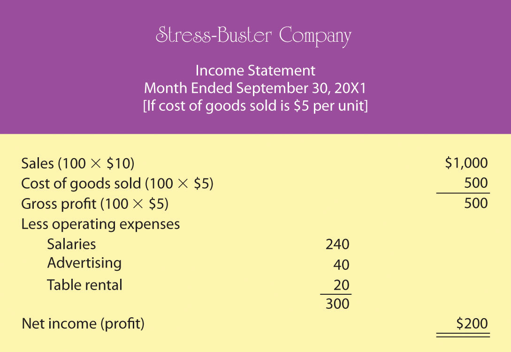Possibility #1 seems to be a good idea. Under this scenario, your income doubles from $100 to $200 because your per-unit gross profit increases by $1 (and you sold 100 stress packs). But there may be a catch: If you cut back on the number of toys, your customers might perceive your product as a lesser value for the money. In fact, you’re reminded of a conversation that you once had with a friend whose father, a restaurant owner, had cut back on the cost of the food he served by buying less expensive meat. In the short term, gross profit per meal went up, but customers eventually stopped coming back and the restaurant nearly went out of business.
Thus you decide to consider possibility #2—reducing your operating costs. In theory, it’s a good idea, but in practice—at least in your case—it probably won’t work. Why not? For one thing, you can’t do without the table and you need your workers (because your grades haven’t improved, you still don’t have time to sit at the table yourself). Second, if you cut salaries from, say, $6 to $5 an hour, you may have a hard time finding people willing to work for you. Finally, you could reduce advertising costs by running an ad every two weeks instead of every week, but this tactic would increase your income by only $20 a month and could easily lead to a drop in sales.
Now you move on to possibility #3—increase sales. The appealing thing about this option is that it has no downside. If you could somehow increase the number of units sold from 100 Stress-Buster packs per month to 150, your income would go up, even if you stick with your original five-toy product. So you decide to crunch some numbers for possibility #3 and come up with the new “what-if” income statement in Figure 12.7 "Proposed Income Statement Number Two for Stress-Buster Company".
Figure 12.7 Proposed Income Statement Number Two for Stress-Buster Company
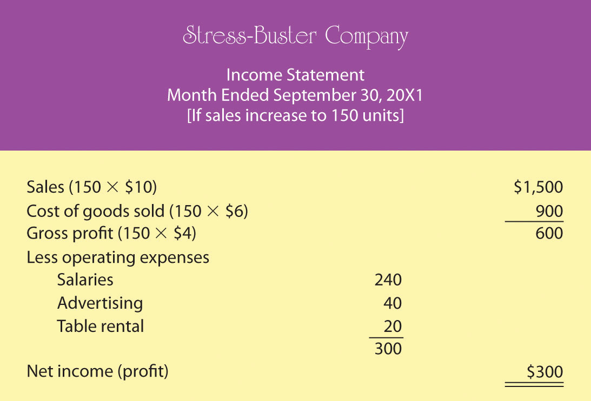As you can see, this is an attractive possibility, even though you haven’t figured out how you’re going to increase sales (maybe you could put up some eye-popping posters and play cool music to attract people to your table. Or maybe your workers could attract buyers by demonstrating relaxation and stress-reduction exercises).
Playing these what-if games has started you thinking: is there some way to figure out the level of sales you need to avoid losing money—to “break even”? This can be done using breakeven analysisMethod of determining the level of sales at which the company will break even (have no profit or loss).. To break even (have no profit or loss), your total sales revenue must exactly equal all your expenses (both variable and fixed). For a merchandiser, like a hypothetical one called The College Shop, this balance will occur when gross profit equals all other (fixed) costs. To determine the level of sales at which this will occur, you need to do the following:
Determine your total fixed costsCosts that don’t change when the amount of goods sold changes., which are so called because the total cost doesn’t change as the quantity of goods sold changes):
Identify your variable costsCosts that vary, in total, as the quantity of goods sold changes but stay constant on a per-unit basis.. These are costs that vary, in total, as the quantity of goods sold changes but stay constant on a per-unit basis. State variable costs on a per-unit basis:
Determine your contribution margin per unitExcess of revenue per unit over variable cost per unit.: selling price per unit – variable cost per unit:
Calculate your breakeven point in unitsNumber of sales units at which net income is zero.: fixed costs ÷ contribution margin per unit:
Your calculation means that if you sell 75 units, you’ll end up with zero profit (or loss) and will exactly break even. To test your calculation, you can prepare a what-if income statement for 75 units in sales (which is your breakeven number of sales). The resulting statement is shown in Figure 12.8 "Proposed Income Statement Number Three for Stress-Buster Company".
Figure 12.8 Proposed Income Statement Number Three for Stress-Buster Company
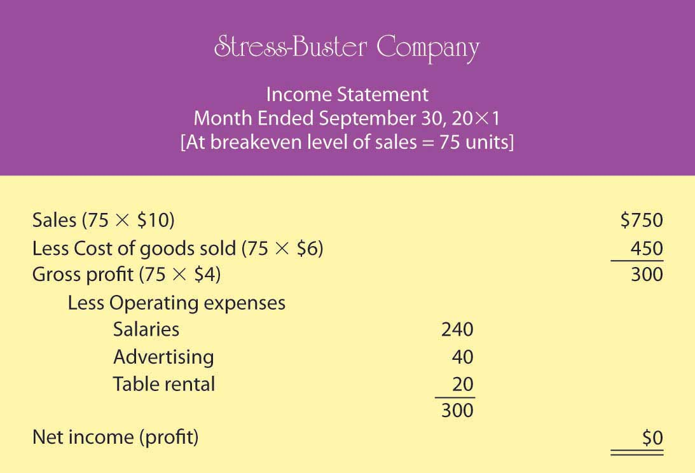What if you want to do better than just break even? What if you want to earn a profit of $200 next month? How many Stress-Buster Pack units would you need to sell? You can find out by building on the results of your breakeven analysis. Note that each additional sale will bring in $4 (contribution margin per unit). If you want to make a profit of $200—which is $200 above your breakeven point—you must sell an additional 50 units ($200 desired profit divided by $4 contribution margin per unit) above your breakeven point of 75 units. If you sell 125 units (75 breakeven units + the additional 50), you’ll make a profit of $200 a month.
As you can see, breakeven analysis is rather handy. It enables you to determine the level of sales that you must reach to avoid losing money and the level of sales that you have to reach to earn a profit of $200. Such information will help you plan for your business. For example, knowing you must sell 125 Stress-Buster Packs to earn a $200 profit will help you decide how much time and money you need to devote to marketing your product.
Your balance sheetReport on a company’s assets, liabilities, and owner’s equity at a specific point in time. reports the following information:
Whereas your income statement tells you how much income you earned over some period of time, your balance sheet tells you what you have (and where it came from) at a specific point in time.
Most companies prepare financial statements on a twelve-month basis—that is, for a fiscal yearCompany’s designated business year. which ends on December 31 or some other logical date, such as June 30 or September 30. Why do fiscal years vary? A company generally picks a fiscal-year end date that coincides with the end of its peak selling period; thus a crabmeat processor might end its fiscal year in October, when the crab supply has dwindled. Most companies also produce financial statements on a quarterly or monthly basis. For Stress-Buster, you’ll want to prepare a monthly balance sheet.
The balance sheet is based on the accounting equationAccounting tool showing the resources of a business (assets) and the claims on those resources (liabilities and owner’s equity).:
assets = liabilities + owner’s equityThis important equation highlights the fact that a company’s assets came from somewhere: either from loans (liabilities) or from investments made by the owners (owner’s equity). This means that the asset section of the balance sheet on the one hand and the liability and owner’s-equity section on the other must be equal, or balance. Thus the term balance sheet.
Let’s prepare two balance sheets for your company: one for the first day you started and one for the end of your first month of business. We’ll assume that when you started Stress-Buster, you borrowed $400 from your parents and put in $200 of your own money. If you look at your first balance sheet in Figure 12.9 "Balance Sheet Number One for Stress-Buster Company" you’ll see that your business has $600 in cash (your assets): Of this total, you borrowed $400 (your liabilities) and invested $200 of your own money (your owner’s equity). So far, so good: Your assets section balances with your liabilities and owner’s equity section.
Figure 12.9 Balance Sheet Number One for Stress-Buster Company
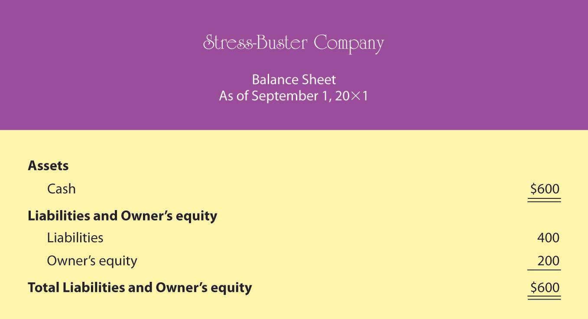Now let’s see how things have changed by the end of the month. Recall that Stress-Buster earned $100 (based on sales of 100 units) during the month of September and that you decided to leave these earnings in the business. This $100 profit increases two items on your balance sheet: the assets of the company (its cash) and your investment in it (its owner’s equity). Figure 12.10 "Balance Sheet Number Two for Stress-Buster Company" shows what your balance sheet will look like on September 30. Once again, it balances. You now have $700 in cash: $400 that you borrowed plus $300 that you’ve invested in the business (your original $200 investment plus the $100 profit from the first month of operations, which you’ve kept in the business).
Figure 12.10 Balance Sheet Number Two for Stress-Buster Company
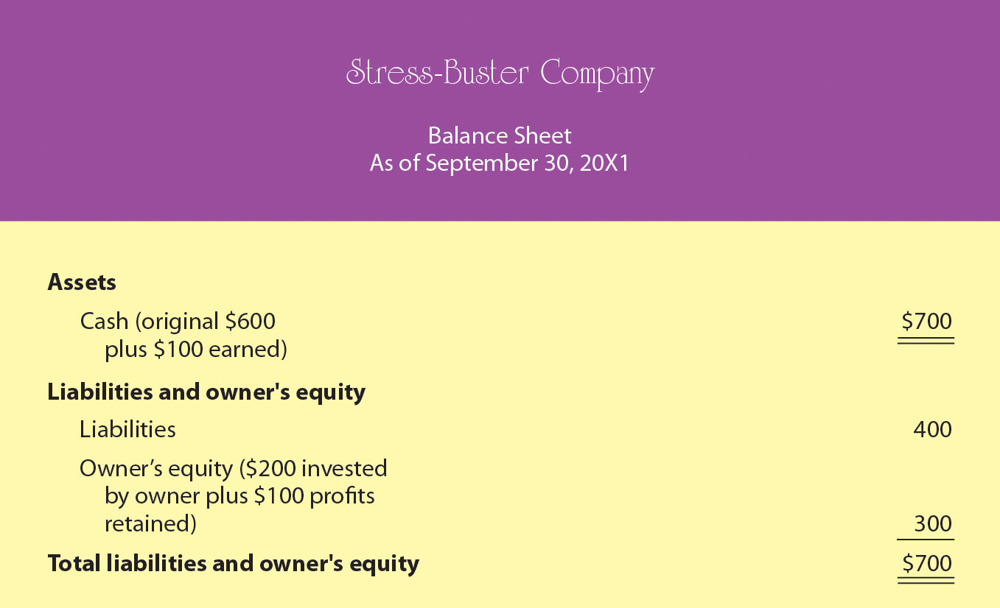Note that we used the net income figure from your income statement to update the owner’s equity section of your end-of-month balance sheet. Often, companies prepare an additional financial statement, called the statement of owner’s equityA financial statement that details changes in owner’s equity for a specified period of time., which details changes in owner’s equity for the reporting period. Figure 12.11 "Sample Statement of Owner’s Equity for Stress-Buster Company" shows what this statement looks like.
Figure 12.11 Sample Statement of Owner’s Equity for Stress-Buster Company
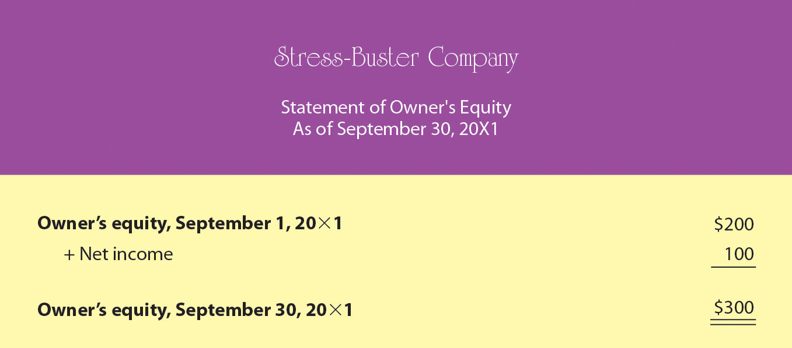When you prepare your financial statements, you should complete them in a certain order:
Why must they be prepared in this order? Because financial statements are interrelated: Numbers generated on one financial statement appear on other financial statements. Figure 12.12 "How Financial Statements Relate to One Another" presents Stress-Buster’s financial statements for the month ended September 30, 20X1. As you review these statements, note that in two cases, numbers from one statement appear in another statement:
Figure 12.12 How Financial Statements Relate to One Another
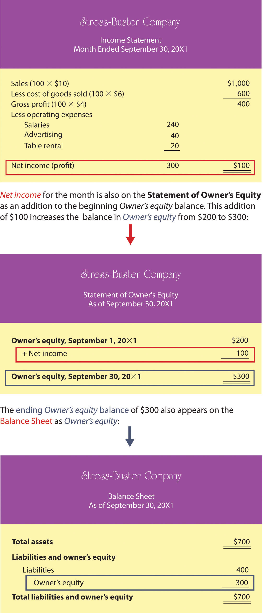If the interlinking numbers are carried forward correctly, and if assets and liabilities are listed correctly, then the balance sheet will balance: Total assets will equal the total of liabilities plus owner’s equity.
The balance sheet is based on the accounting equation:
assets = liabilities + owner’s equityThis equation highlights the fact that a company’s assets came from one of two sources: either from loans (its liabilities) or from investments made by owners (its owner’s equity).
Describe the information provided by each of these financial statements: income statement, balance sheet, statement of owner’s equity. Identify ten business questions that can be answered by using financial accounting information. For each question, indicate which financial statement (or statements) would be most helpful in answering the question, and why.
You’re the president of a student organization, and to raise funds for a local women’s shelter you want to sell single long-stem red roses to students on Valentine’s Day. Each prewrapped rose will cost $3. An ad for the college newspaper will cost $100, and supplies for posters will cost $60. If you sell the roses for $5, how many roses must you sell to break even? Because breaking even won’t leave you any money to donate to the shelter, you also want to know how many roses you’d have to sell to raise $500. Does this seem like a realistic goal? If the number of roses you need to sell in order to raise $500 is unrealistic, what could you do to reach this goal?
In this section, we’re going to take a step further into the world of accounting by examining the principles of accrual accounting. In our Stress-Buster illustration, we’ve assumed that all your transactions have been made in cash: You paid cash for your inputs (plastic treasure chests and toys) and for your other expenses, and your customers paid cash when they bought Stress-Buster packs. In the real world, of course, things are rarely that simple. In the following cases, timing plays a role in making and receiving payments:
In situations such as these, firms use accrual accountingAccounting system that records transactions when they occur, regardless of when cash is paid or received.: a system in which the accountant records a transaction when it occurs, without waiting until cash is paid out or received. Here are a few basic principles of accrual accounting:
As we saw in our Stress-Buster illustration, it’s easier to make sense of accounting concepts when you see some real—or at least realistic—numbers being put to realistic use. So let’s now assume that you successfully operated the Stress-Buster Company while you were in college. Now fast-forward to graduation, and rather than work for someone else, you’ve decided to set up a more ambitious business—some kind of retail outlet—close to the college. During your four years in school, you noticed that there was no store near campus that met the wide range of students’ specific needs. Thus the mission of your proposed retail business: to provide products that satisfy the specific needs of college students.
Figure 12.13 The College Shop
You’ve decided to call your store “The College Shop.” Your product line will range from things needed to outfit a dorm room (linens, towels, small appliances, desks, rugs, dorm refrigerators) to things that are just plain fun and make student life more enjoyable (gift packages, posters, lava lamps, games, inflatable furniture, bean bag chairs, message boards, shower radios, backpacks). And of course you’ll also sell the original Stress-Buster Fun Pack. You’ll advertise to students and parents through the college newspaper and your own Web site.
At this point, we’re going to repeat pretty much the same process that we went through with your first business. First, we’ll prepare a beginning balance sheet that reflects your new company’s assets, liabilities, and owner’s equity on your first day of business—January 1, 20X6. Next, we’ll prepare an income statement and a statement of owner’s equity. Finally, we’ll create a balance sheet that reflects the company’s financial state at the end of your first year of business.
Although the process should now be familiar, the details of our new statements will be more complex—after all, your transactions will be more complicated: You’re going to sell and buy stuff on credit, maintain an inventory of goods to be sold, retain assets for use over an extended period of time, borrow money and pay interest on it, and deal with a variety of expenses that you didn’t have before (rent, insurance, etc.).
Your new beginning balance sheet contains the same items as the one that you created for Stress-Buster—cash, loans, and owner’s equity. But because you’ve already performed a broader range of transactions before you opened for business, you’ll need some new categories:
Obviously, then, you need to prepare a more sophisticated balance sheet than the one you created for your first business. We call this new kind of balance sheet a classified balance sheetBalance sheet that totals assets and liabilities in separate categories. because it classifies assets and liabilities into separate categories.
On a classified balance sheet, assets are listed in order of liquiditySpeed with which an asset can be converted into cash.—how quickly they can be converted into cash. They’re also broken down into two categories:
Your current assets will be cash and inventory, and your long-term assets will be furniture and equipment. We’ll take a closer look at the assets section of your beginning balance sheet, but it makes sense to analyze your liabilities first.
Liabilities are grouped in much the same manner as assets:
Recall that your liabilities come from your two loans: one which is payable in a year and considered current, and one which is long term and due in five years.
Now we’re ready to review your beginning balance sheet, which is shown in Figure 12.14 "Beginning Balance Sheet for The College Shop". Once again, your balance sheet balances: Your total assets of $275,000 equal your total liabilities plus owner’s equity of $275,000.
Figure 12.14 Beginning Balance Sheet for The College Shop
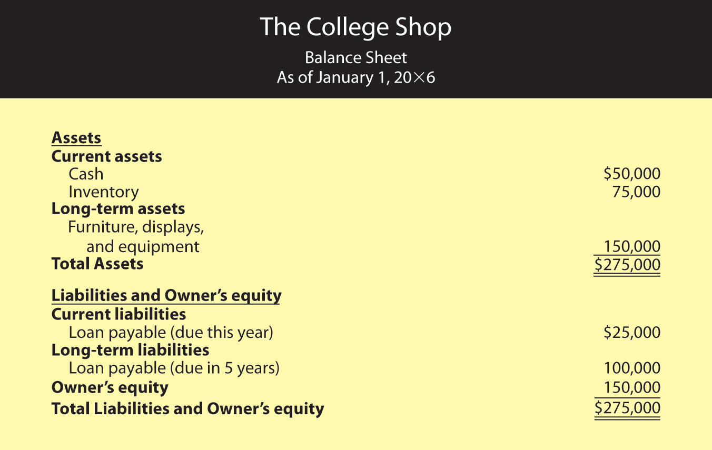Let’s begin our analysis of your beginning balance sheet with the liabilities and owner’s-equity sections. We’re assuming that, thanks to a strong business plan, you’ve convinced a local bank to loan you a total of $125,000—a short-term loan of $25,000 and a long-term loan of $100,000. Naturally, the bank charges you interest (which is the cost of borrowing money); your rate is 8 percent per year. In addition, you personally contributed $150,000 to the business (thanks to a trust fund that paid off when you turned 21).
Now let’s turn to the assets section of your beginning balance sheet. What do you have to show for your $275,000 in liabilities and owner’s equity? Of this amount, $50,000 is in cash—that is, money deposited in the company’s checking and other bank accounts. You used another $75,000 to pay for inventory that you’ll sell throughout the year. Finally, you spent $150,000 on several long-term assets, including a sign for the store, furniture, store displays, and computer equipment. You expect to use these assets for five years, at which point you’ll probably replace them.
Finally, let’s look at your income statement, which is shown in Figure 12.15 "Income Statement for The College Shop, Year Ended December 31". Like your College Shop balance sheet, your College Shop income statement is more complex than the one you prepared for Stress-Buster, and the amounts are much larger. In addition, the statement covers a full calendar year.
Figure 12.15 Income Statement for The College Shop, Year Ended December 31
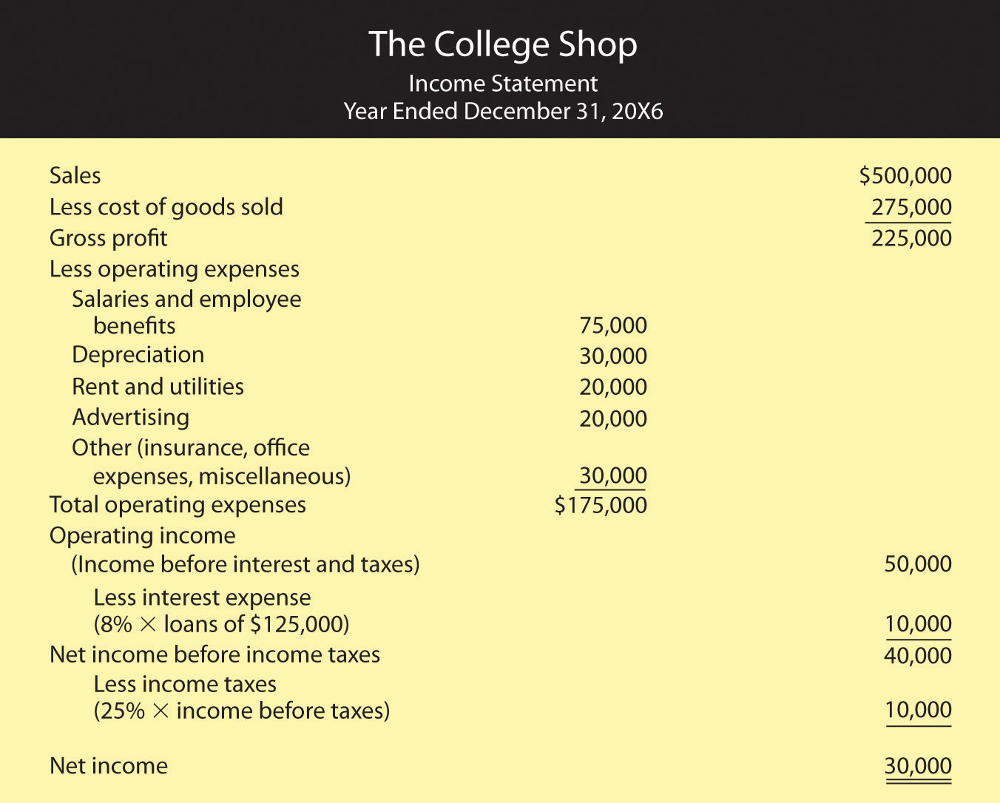Note, by the way, that the income statement that we prepared for The College Shop is designed for a merchandiser—a company that makes a profit by selling goods. How can you tell? Businesses that sell services (such as accounting firms or airlines) rather than merchandise don’t have lines labeled cost of goods sold on their statements.
The format of this income statement also highlights the most important financial fact in running a merchandising company: you must sell goods at a profit (called gross profit) that is high enough to cover your operating costs, interest, and taxes. Your income statement, for example, shows that The College Shop generated $225,000 in gross profit through sales of goods. This amount is sufficient to cover your operating expense, interest, and taxes and still produce a net income of $30,000.
Note that The College Shop income statement also lists a few expenses that the Stress-Buster didn’t incur:
Our next step is to prepare a statement of owner’s equity, which is shown in Figure 12.16 "Statement of Owner’s Equity for The College Shop". Note that the net income of $30,000 from the income statement was used to arrive at the year-end balance in owner’s equity.
Figure 12.16 Statement of Owner’s Equity for The College Shop
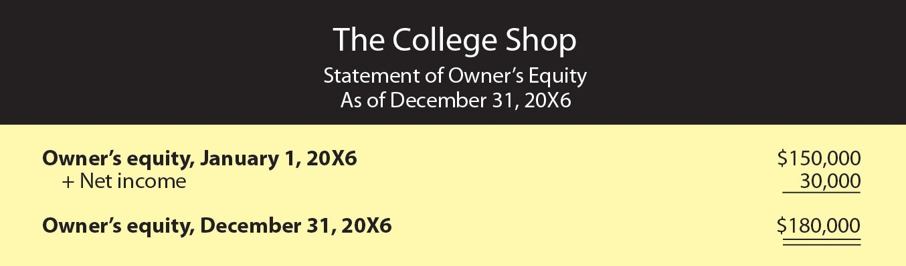We’ll conclude with your balance sheet for the end of your first year of operations, which is shown in Figure 12.17 "End-of-Year Balance Sheet for The College Shop". First, look at your assets. At year’s end, you have a cash balance of $70,000 and inventory of $80,000. You also have an accounts receivable of $90,000 because many of your customers have bought goods on credit and will pay later. In addition, the balance sheet now shows two numbers for long-term assets: the original cost of these assets, $150,000, and an accumulated depreciation amount of $30,000, which reflects the amount that you’ve charged as depreciation expense since the purchase of the assets. The carrying value of these long-term assets is now $120,000 ($150,000 - $30,000), which is the difference between their original cost and the amount that they’ve been depreciated. Your total assets are thus $360,000.
Figure 12.17 End-of-Year Balance Sheet for The College Shop
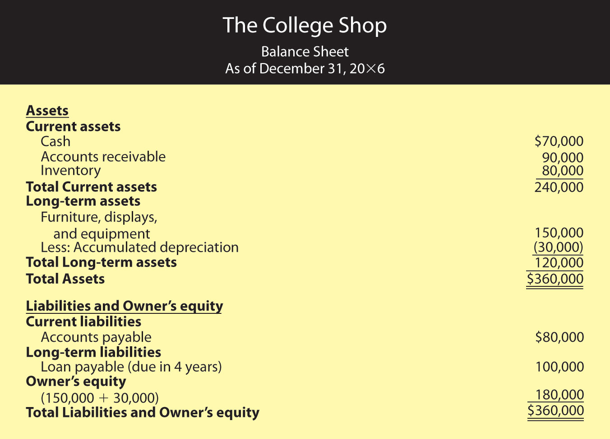The total of your liabilities of $180,000 plus owner’s equity of $180,000 also equals $360,000. Your liabilities consist of a long-term loan of $100,000 (which is now due in four years) and accounts payable of $80,000 (money that you’ll have to pay out later for purchases that you’ve made on credit). Your owner’s equity (your investment in the business) totals $180,000 (the $150,000 you originally put in plus the $30,000 in first-year earnings that you retained in the business).
Owners, investors, and creditors can learn a lot from your balance sheet and your income statement. Indeed, each tells its own story. The balance sheet tells what assets your company has now and where they came from. The income statement reports earned income on an accrual basis (recognizing revenues when earned and expenses as incurred regardless of when cash is received or paid). But the key to surviving in business is generating the cash you need to keep it up and running. It’s not unusual to hear reports about companies with cash problems. Sometimes they arise because the products in which the firm has invested aren’t selling as well as it had forecast. Maybe the company tied up too much money in a plant that’s too big for its operations. Maybe it sold products to customers who can’t pay. Maybe management just overspent. Whatever the reason, cash problems will hamper any business. Owners and other interested parties need a financial statement that helps them understand a company’s cash flow.
The statement of cash flowsFinancial statement reporting on cash inflows and outflows resulting from operating, investing, and financing activities. tells you where your cash came from and where it went. It furnishes information about three categories of activities that cause cash either to come in (cash inflows) or to go out (cash outflows):
A cash flow statement for The College Shop would look like the one in Figure 12.18 "Statement of Cash Flows for The College Shop". You generated $45,000 in cash from your company’s operations (a cash inflow) and used $25,000 of this amount to pay off your short-term loan (a cash outflow). The net result was an increase in cash of $20,000. This $20,000 increase in cash agrees with the change in your cash during the year as it’s reported in your balance sheets: You had an end-of-the-year cash balance of $70,000 and a beginning-of-the-year balance of $50,000 ($70,000 − $50,000 = $20,000). Because you didn’t buy or sell any long-term assets during the year, your cash flow statement shows no cash flows from investing activities.
Figure 12.18 Statement of Cash Flows for The College Shop
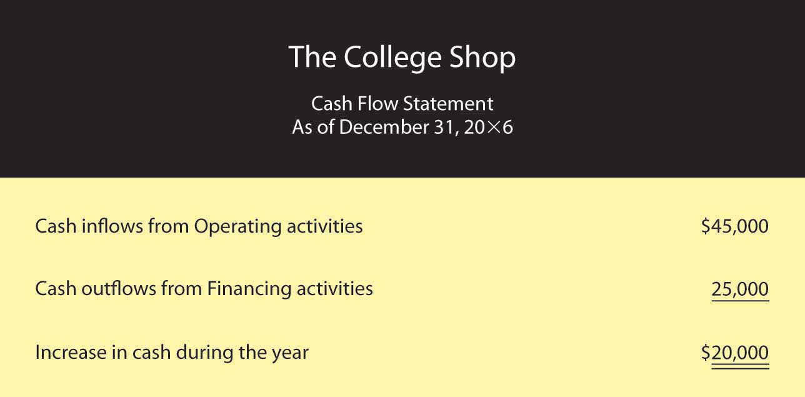There are two different methods for reporting financial transactions:
A classified balance sheet separates assets and liabilities into two categories—current and long-term:
(AACSB) Analysis
To earn money to pay some college expenses, you ran a lawn-mowing business during the summer. Before heading to college at the end of August, you wanted to find out how much money you earned for the summer. Fortunately, you kept good accounting records. During the summer, you charged customers a total of $5,000 for cutting lawns (which includes $500 still owed to you by one of your biggest customers). You paid out $1,000 for gasoline, lawn mower repairs, and other expenses, including $100 for a lawn mower tune-up that you haven’t paid for yet. You decided to prepare an income statement to see how you did. Because you couldn’t decide whether you should prepare a cash-basis statement or an accrual statement, you prepared both. What was your income under each approach? Which method (cash-basis or accrual) more accurately reflects the income that you earned during the summer? Why?
(AACSB) Analysis
Identify the categories used on a classified balance sheet to report assets and liabilities. How do you determine what goes into each category? Why would a banker considering a loan to your company want to know whether an asset or liability is current or long-term?
(AACSB) Analysis
You review a company’s statement of cash flows and find that cash inflows from operations are $150,000, net outflows from investing are $80,000, and net inflows from financing are $60,000. Did the company’s cash balance increase or decrease for the year? By what amount? What types of activities would you find under the category investing activities? Under financing activities? If you had access to the company’s income statement and balance sheet, why would you be interested in reviewing its statement of cash flows? What additional information can you gather from the statement of cash flows?
Now that you know how financial statements are prepared, let’s see how they’re used to help owners, managers, investors, and creditors assess a firm’s performance and financial strength. You can glean a wealth of information from financial statements, but first you need to learn a few basic principles for “unlocking” it.
Let’s fast-forward again and assume that your business—The College Shop—has just completed its second year of operations. After creating your second-year income statement, you decide to compare the numbers from this statement with those from your first statement. So you prepare the comparative income statementFinancial statement showing income for more than one year. in Figure 12.19 "Comparative Income Statement for The College Shop", which shows income figures for year 2 and year 1 (accountants generally put numbers for the most recent year in the inside column).
Figure 12.19 Comparative Income Statement for The College Shop
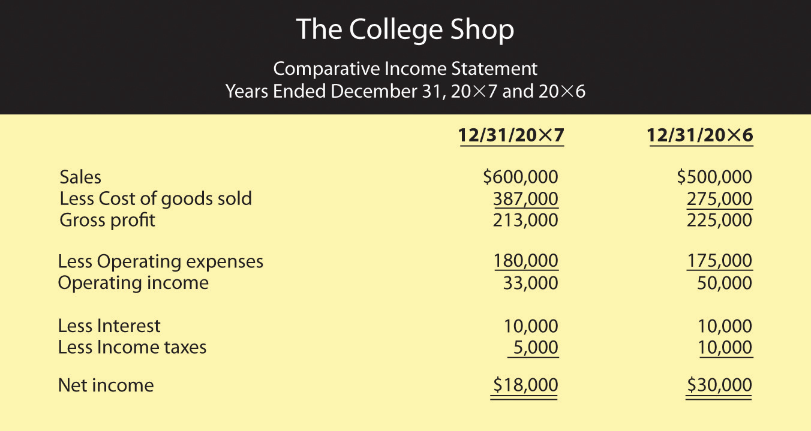What does this statement tell us about your second year in business? Some things look good and some don’t. Your sales went up from $500,000 to $600,000 (a 20 percent increase—not bad). But your profit was down—from $30,000 to $18,000 (a bad sign). As you stare at the statement, you’re asking yourself the question: Why did my profit go down even though my sales went up? Does this result make sense? Is there some way of comparing two income statements that will give me a more helpful view of my company’s financial health? One way is called vertical percentage analysisAnalysis of an income statement treating the relationship of each item as a percentage of a base (usually sales).. It’s useful because it reveals the relationship of each item on the income statement to a specified base—generally sales—by expressing each item as a percentage of that base.
Figure 12.20 "Comparative Income Statement Using Vertical Percentage Analysis" shows what comparative income statements look like when you use vertical percentage analysis showing each item as a percentage of sales. Let’s see if this helps clarify things. What do you think accounted for the company’s drop in income even though The College Shop sales went up?
Figure 12.20 Comparative Income Statement Using Vertical Percentage Analysis
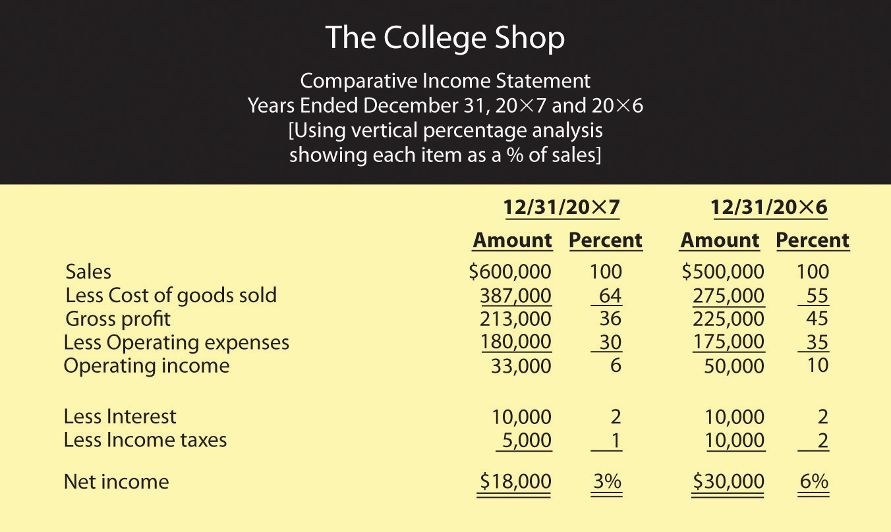The percentages help you to analyze changes in the income statement items over time, but it might be easier if you think of the percentages as pennies. In year 1, for example, for every $1.00 of sales, $0.55 went to pay for the goods that you sold, leaving $0.45 to cover your other costs and leave you a profit. Operating expenses (salaries, rent, advertising, and so forth) used up $0.35 of every $1.00 of sales, while interest and taxes took up $0.02 each. After you covered all your costs, you had $0.06 profit for every $1.00 of sales.
Now, compare these figures to those for year 2. Where is the major discrepancy? It’s in Cost of goods sold. Instead of using $0.55 of every $1.00 of sales to buy the goods you sold, you used $0.64. As a result, you had $0.09 less ($0.64 – $0.55) to cover other costs. This is the major reason why you weren’t as profitable in year 2 as you were in year 1: your Gross profit as a percentage of sales was lower in year 2 than it was in year 1. Though this information doesn’t give you all the answers you’d like to have, it does, however, raise some interesting questions. Why was there a change in the relationship between Sales and Cost of goods sold? Did you have to pay more to buy goods for resale and, if so, were you unable to increase your selling price to cover the additional cost? Did you have to reduce prices to move goods that weren’t selling well? (If your costs stay the same but your selling price goes down, you make less on each item sold.) Answers to these questions require further analysis, but at least you know what the useful questions are.
Vertical percentage analysis helps you analyze relationships between items on your income statement. But how do you compare your financial results with those of other companies in your industry or with the industry overall? And what about your balance sheet? Are there relationships on this statement that also warrant investigation? Should you further examine any relationships between items on your income statement and items on your balance sheet? These issues can be explored by using ratio analysisTechnique for financial analysis that shows the relationship between two numbers., a technique for evaluating a company’s financial performance.
First, remember that a ratio is just one number divided by another, with the result expressing the relationship between the two numbers. Let’s say, for example, that you want to know the relationship between the cost of going to a movie and the cost of renting a DVD movie. You could make the following calculation:
Going to a movie costs two times as much as renting a DVD.
Ratio analysis is also used to assess a company’s performance over time and to compare one company to similar companies or to the overall industry in which it operates. You don’t learn much from just one ratio, or even a number of ratios covering the same period. Rather, the value in ratio analysis lies in looking at the trend of ratios over time and in comparing the ratios for several time periods with those of competitors and the industry as a whole. There are a number of different ways to categorize financial ratios. Here’s just one set of categories:
Using each of these categories, we can find dozens of different ratios, but we’ll focus on a few examples.
We’ve already determined the two most common profit margin ratios—gross profit margin and net profit margin—when we used vertical percentage analysis to determine the relationship to Sales of each item on The College Shop’s income statement. We were examining gross profit when we found that Gross profit for year 1 was 45 percent of Sales and that, in year 2, it had declined to 36 percent. We can express the same relationships as ratios:
We can see that gross profit margin declined (a situation that, as we learned earlier, probably isn’t good). But how can you tell whether your gross profit margin for year 2 is appropriate for your company? For one thing, we can use it to compare The College Shop’s results to those of its industry. When we make this comparison, we find that the specialized retail industry (in which your company operates) reports an average gross profit margin of 41 percent. For year 1, therefore, we had a higher ratio than the industry; in year 2, though we had a lower ratio, we were still in the proverbial ballpark.
It’s worthwhile to track gross profit margin, whether for your company or for companies that you might invest in or lend money to. In particular, you’ll gain some insight into changes that might be occurring in a business. For instance, what if you discover that a firm’s gross profit margin has declined? Is it because it’s costing more for the company to buy or make its products, or is it because its competition is forcing it to lower its prices?
Net profit is the money that a company earns after paying all its expenses, including the costs of buying or making its products, running its operations, and paying interest and taxes. Look again at Figure 12.20 "Comparative Income Statement Using Vertical Percentage Analysis". Using vertical percentage analysis, we found that for The College Shop, net profit as a percentage of sales was 6 percent in year 1 but declined to 3 percent in year 2. Expressed as ratios, these relationships would look like this:
You realize that a declining net profit margin isn’t good, but you wonder how you compare with your industry. A little research informs you that average net profit margin in the industry is 7 percent. You performed nearly as well as the industry in year 1 but fell further from your target in year 2. What does this information tell you? That a goal for year 3 should be trying to increase your net profit margin.
These ratios reveal the way in which assets (shown on the balance sheet) are being used to generate income (shown on the income statement). To compute this group of ratios, therefore, you must look at both statements. In Figure 12.19 "Comparative Income Statement for The College Shop", we produced a comparative income statement for The College Shop’s first two years. Figure 12.21 "Comparative Balance Sheet for The College Shop" is a comparative balance sheet for the same period.
Figure 12.21 Comparative Balance Sheet for The College Shop
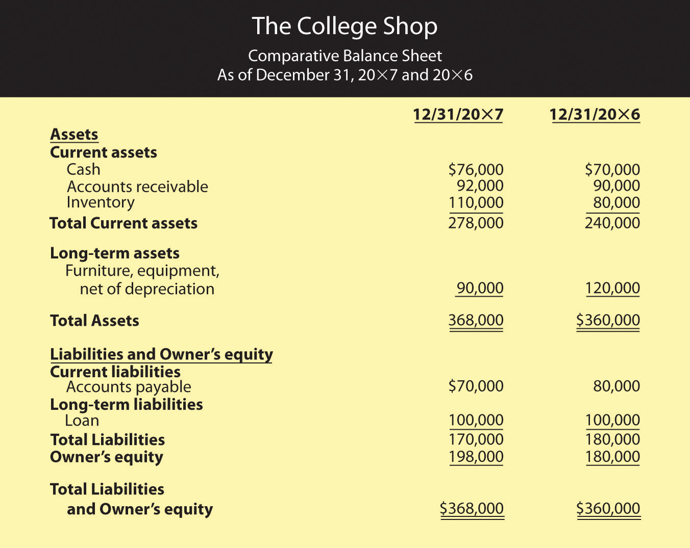As you can see from Figure 12.21 "Comparative Balance Sheet for The College Shop", running even a small business entails a substantial investment in assets. Even if you rent space, for example, you must still buy furniture and equipment. To have products on hand to sell, you need to tie up money in inventory. And once you’ve sold them, you may have money tied up in accounts receivable while you’re waiting for customers to pay you. Thus, investing in assets is a normal part of doing business. Managing your assets efficiently is a basic requirement of business success. Let’s look at a representative management efficiency ratio. The inventory turnover ratioFinancial ratio that shows how efficiently a company turns over its inventory. measures a firm’s efficiency in selling its inventory.
You don’t make money from unsold inventory. You make money when you sell inventory, and the faster you sell it, the more money you make. To determine how fast your inventory is “turning,” you need to examine the relationship between sales and inventory.Another way to calculate inventory turnover is to divide Cost of goods sold by inventory (rather than dividing Sales by inventory). We don’t discuss this method here because the available industry data used for comparative purposes reflect Sales rather than Cost of goods sold. Let’s see how well The College Shop is doing in moving its inventory:
For year 1, The College Shop converted its inventory into sales 6.25 times: on average, your entire inventory was sold and replaced 6.25 times during the year. For year 2, however, inventory was converted into sales only 5.45 times. The industry did better, averaging turnover of 6.58 times. Before we discuss possible reasons for the drop in The College Shop’s inventory turnover ratio, let’s look at an alternative way of describing this ratio. Simply convert this ratio into the average number of days that you held an item in inventory. In other words, divide 365 days by your turnover ratio:
The College Shop was doing fine in year 1 (relative to the industry), but something happened in year 2 to break your stride. Holding onto inventory for an extra 9 days (67 days for year 2 minus 58 days for year 1) is costly. What happened? Perhaps inventory levels were too high because you overstocked. It’s good to have products available for customers, but stocking too much inventory is costly. Maybe some of your inventory takes a long time to sell because it’s not as appealing to customers as you thought. If this is the case, you may have a problem for the next year because you’ll have to cut prices (and reduce profitability) in order to sell the same slow-moving inventory.
Optimal inventory turnover varies by industry and even by company. A supermarket, for example, will have a high inventory turnover because many of its products are perishable and because it makes money by selling a high volume of goods (making only pennies on each sale). A company that builds expensive sailboats, by contrast, will have a low inventory turnover: it sells few boats but makes a hefty profit on each one. Some companies, such as Dell Computer, are known for keeping extremely low inventory levels. Because computers are made to order, Dell maintains only minimal inventory and so enjoys a very high ratio of sales to inventory.
“It takes money to make money,” goes the old saying, and it’s true. Even the smallest business uses money to grow. Management effectiveness ratios address the question: how well is a company performing with the money that owners and others have invested in it?
These ratios are widely regarded as the best measure of corporate performance. You can give a firm high marks for posting good profit margins or for turning over its inventory quickly, but the final grade depends on how much profit it generates with the money invested by owners and creditors. Or, to put it another way, that grade depends on the answer to the question: is the company making a sufficiently high return on its assets?
Like management efficiency ratios, management effectiveness ratios examine the relationship between items on the income statement and items on the balance sheet. From the income statement you always need to know the “bottom line”—net profit. The information that you need from the balance sheet varies according to the ratio that you’re trying to calculate, but it’s always some measure of the amount of capital used in the business. Common measures of capital investment include total equity, total assets, or a combination of equity and long-term debt. Let’s see whether The College Shop made the grade. Did it generate a reasonable profit on the assets invested in the company?
Because the industry average return on assets is 7.9 percent, The College Shop gets an “A” for its first year’s performance. It slipped in the second year but is probably still in the “B” range.
Financial condition ratios measure the financial strength of a company. They assess its ability to pay its current bills; and to determine whether its debt load is reasonable, they examine the proportion of its debt to its equity.
Let’s look first at a company’s ability to meet current obligations. The ratio that evaluates this ability is called the current ratioFinancial ratio showing the relationship between a company’s current assets and current liabilities., which examines the relationship between a company’s current assets and its current liabilities. The balance of The College Shop’s current assets and current liabilities appears on the comparative balance sheet in Figure 12.21 "Comparative Balance Sheet for The College Shop". By calculating its current ratio, we’ll see whether the business is likely to have trouble paying its current liabilities.
The College Shop’s current ratio indicates that, in year 1, the company had $3.00 in current assets for every $1.00 of current liabilities. In the second year, the company had $4.00 of current assets for every $1.00 of current liabilities. The average current ratio for the industry is 2.42. The good news is that The College Shop should have no trouble meeting its current obligations. The bad news is that, ironically, its current ratio might be too high: companies should have enough liquid assets on hand to meet current obligations, but not too many. Holding excess cash can be costly when there are alternative uses for it, such as paying down loans or buying assets that can generate revenue. Perhaps The College Shop should reduce its current assets by using some of its cash to pay a portion of its debt.
Now let’s look at the way The College Shop is financed. The debt-to-equity ratioFinancial ratio showing the relationship between debt (funds acquired from creditors) and equity (funds invested by owners). (also called debt ratio) examines the riskiness of a company’s capital structureRelationship between a company’s debt (funds acquired from creditors) and its equity (funds invested by owners).—the relationship between funds acquired from creditors (debt) and funds invested by owners (equity):
In year 1, the ratio of 1 indicates that The College Shop has an equal amount of equity and debt (for every $1.00 of equity, it has $1.00 of debt). But this proportion changes in year 2, when the company has more equity than debt: for every $1.00 of equity, it now has $0.85 in debt. How does this ratio compare to that of the industry? The College Shop, it seems, is heavy on the debt side: the industry average of 0.49 indicates that, on average, companies in the industry have only $0.49 of debt for every $1.00 of equity. Its high debt-to-equity ratio might make it hard for The College Shop to borrow more money in the future.
How much difference can this problem make to a business when it needs funding? Consider the following example. Say that you have two friends, both of whom want to borrow money from you. You’ve decided to loan money to only one of them. Both are equally responsible, but you happen to know that one has only $100 in the bank and owes $1,000. The other also has $100 in the bank but owes only $50. To which one would you lend money? The first has a debt-to-equity ratio of 10 ($1,000 debt to $100 equity) and the second a ratio of 0.50 ($50 debt to $100 equity). You—like a banker—will probably lend money to the friend with the better debt-to-equity ratio, even though the other one needs the money more.
It’s possible, however, for a company to make its interest payments comfortably even though it has a high debt-to-equity ratio. Thus, it’s helpful to compute the interest coverage ratioFinancial ratio showing a company’s ability to pay interest on its debts from its operating income., which measures the number of times that a firm’s operating income can cover its interest expense. We compute this ratio by examining the relationship between interest expense and operating income. A high-interest coverage ratio indicates that a company can easily make its interest payments; a low ratio suggests trouble. Here are the interest coverage ratios for The College Shop:
As the company’s income went down, so did its interest coverage (which isn’t good). But the real problem surfaces when you compare the firm’s interest coverage with that of its industry, which is much higher—14.5. This figure means that companies in the industry have, on average, $14.50 in operating income to cover each $1.00 of interest that it must pay. Unfortunately, The College Shop has only $3.30.
Again, consider an example on a more personal level. Let’s say that following graduation, you have a regular interest payment due on some student loans. If you get a fairly low-paying job and your income is only 3 times the amount of your interest payment, you’ll have trouble making your payments. If, on the other hand, you land a great job and your income is 15 times the amount of your interest payments, you can cover them much more comfortably.
So, what have we learned about the performance of The College Shop? What do we foresee for the company in the future? To answer this question, let’s identify some of the basic things that every businessperson needs to do in order to achieve success:
The ratios that we’ve computed in this section allow us to evaluate The College Shop on each of these dimensions, and here’s what we found:
What, then, does the future hold for The College Shop? It depends. If the company returns to year-1 levels of gross margin (when it made $0.45 on each $1.00 of sales), and if it can increase its sales volume, it might generate enough cash to reduce its long-term debt. But if the second-year decline in profitability continues, it will run into financial difficulty in the next few years. It could even be forced out of business when the bank demands payment on its long-term loan.
Profit margin ratios show how much of each sales dollar is left after certain costs are covered.
Management efficiency ratios tell you how efficiently your assets are being managed.
Management effectiveness ratios tell you how effective management is at running the business and measure overall company performance by comparing net profit to some measure of the amount of capital used in the business.
(AACSB) Analysis
The accountant for my company just ran into my office and told me that our gross profit margin increased while our net profit margin decreased. She also reported that while our debt-to-equity ratio increased, our interest coverage ratio decreased. She was puzzled by the apparent inconsistencies. Help her out by providing possible explanations for the behavior of these ratios.
Consider the following scenario. You feel good that you’ve managed to create relevant, accurate, timely financial statements for your first year in business as The College Shop, but you find that you’re disappointed about one thing—your net income figure. For some time now, you’ve been trying to convince a friend to invest in The College Shop, telling him that the business would bring in at least $40,000 in income during its first year. Every time you review the income statement in Figure 12.15 "Income Statement for The College Shop, Year Ended December 31" (shown in abbreviated form below), however, you’re forced to face the fact that you earned just $30,000—$10,000 short of your optimistic projection.
Revenues − Expenses (CGS, operating expenses, interest and taxes) = Net income $500,000 − $470,000 = $30,000As you stare one more time at your bottom line, you’re wishing that there was some way to change that single bothersome digit and transform $30,000 into $40,000. Then it hits you. You know that it’s not exactly the most upright thing to do, but what if you were to shift half of your first-year advertising expense of $20,000 into your second year of operation? If you did that, then you’d cut the advertising expense on your first-year income statement by $10,000. Now, with your newly acquired understanding of accounting principles, you know that if you reduce expenses on your income statement by $10,000, your net income will increase by the same amount. So just to see what your “revised” income statement would look like, you go ahead and make your hypothetical change. Sure enough, mission accomplished: Your income statement now reports a net income of $40,000—your actual net income of $30,000 plus your upward “adjustment” of $10,000.
Revenues − Expenses (CGS, operating expenses, interest and taxes) = Net income $500,000 − $460,000 = $40,000Although you now feel even more satisfied than ever with your newfound expertise in accounting strategy, you’re once again forced to stop and think. If you merely change your net income and nothing else, the balance sheet in Figure 12.17 "End-of-Year Balance Sheet for The College Shop" won’t balance any more. Why not? Because when you inflated your net income to $40,000 and added it to your beginning owner’s equity balance of $150,000, this increased your owner’s equity by $10,000—from $180,000 to $190,000. To make sure that you’ve accurately assessed the snag in your strategy, you plug in the accounting equation—
assets = liabilities + owner’s equity—and this, unfortunately, is what you get:
$360,000 ≠ $180,000 + $190,000.So, now what? As you ponder the troublesome ramifications of your balance sheet, yet another accounting strategy pops into your head. At the end of the year, you still owed $6,000 for radio ads and $4,000 for newspaper ads—$10,000 that’s included in accounts payable on your year-end balance sheet. What if you just reduced your accounts payable balance by $10,000? If you did that, you’d also reduce by $10,000 the amount under liabilities and owner’s equity, cutting it from $370,000 to $360,000. Wouldn’t that make everything balance? Plugging in the numbers from your latest brainstorm, you now get:
$360,000 = $170,000 + $190,000.That’s more like it. Now you can go ahead and “adjust” your financial statements, satisfied that you’re well on your way to mastering all of the accounting strategy that you’ll need to handle the financial-reporting needs of your new business.
Unfortunately, you may also be well on your way to becoming the Bernie Ebbers of the small-business set. In 2002, when the giant telecom company WorldCom collapsed under the weight of an $11 billion fraud scheme, CEO Ebbers, who was convicted of securities fraud and conspiracy, got twenty-five years in a federal penitentiary (“I don’t know accounting,” he told the judge). And Ebbers wasn’t the only person on the WorldCom payroll who was charged with illegal activities: Accounting department managers went down with him. Betty Vinson, for example, a forty-seven-year-old midlevel accountant who’d followed orders to falsify accounting records, was sentenced to five months in jail. And she was lucky—she got minimal jail time because she cooperated with federal prosecutors.See Susan Pulliam, “How Following Orders Can Hurt Your Career,” CFO.com, October 3, 2003, http://www.cfo.com (accessed July 22, 2010).
The damage done at WorldCom spread to innocent employees as well, not to mention investors, creditors, and business partners. In 2001, when Enron, the seventh-largest company in America, melted down in the heat of an investigation into its financial-reporting practices, it took down an entire accounting firm with it—eighty-nine-year-old Arthur Andersen, then one of the “Big Five” public accounting firms. Volumes have been written about what went wrong, but we can pretty much boil it down to this: Enron executives behaved unethically and illegally, and Andersen auditors looked the other way. Instead of performing its role as public watchdog, Andersen was watching its own pocketbook: The accounting firm protected the revenues generated by lucrative consulting contracts with its client instead of protecting the client’s stakeholders. In so doing, Andersen not only shirked its responsibilities as a public auditor but also covered up evidence of its own inappropriate actions.
In 2002, Andersen gave up its licenses to practice as certified public accountants in the United States, and a company that had employed 85,000 people only 10 years earlier now employs about 200, most of them to deal with lawsuits and to oversee the process of shutting down the company for good.See Michael Moffett, What Happened at Enron? (Cambridge, MA: Harvard Business Review, July 2004); and Barbara Ley Toffler with Jennifer Reingold, Final Accounting: Ambition, Greed, and the Fall of Arthur Andersen (New York: Broadway Books, 2003), http://books.google.com (accessed July 22, 2010).
In a very real sense, the issue at the bottom of all this financial misconduct is trustworthiness. As we’ve seen, accountants are supposed to provide users with financial reports that are useful because they’re relevant, timely, and, most important, accurate. It should go without saying that if users—whether internal or external—can’t trust these reports to be accurate, they can’t rely on them to be as useful as they should be. Would you, for instance, invest in or loan money to a company whose financial reports you can’t trust?
Which—appropriately—brings us back to you and your little foray into falsifying accounting records. Let’s say that in February of your second year of operations, you have an unexpected opportunity to expand into the vacated store right next to The College Shop. It’s too good to pass up, but you’ll need quite a bit of money to outfit the space and expand your inventory. First, you go to the friend for whose benefit you “adjusted” your financial statements, but he’s just lost a bundle in the stock market and can’t help you out. Your only option, then, is to get a bank loan. So you go to your banker, and some version of the following exchange occurs early in the conversation:
| YOU: | I need a loan. |
| BANKER: | Let me see your financial statements. |
She means, of course, the first-year statements that you falsified, and if you’re offered and accept a loan under these circumstances, you could be guilty of a financial crime that, according to the FBI, is normally characterized by “deceit, concealment, or violation of trust” and committed “to obtain personal or business advantage.” The maximum you could get under federal law is twenty years, although your case no doubt calls for a sentence measured in mere months.Federal Bureau of Investigations, Financial Crimes Report to the Public (Washington, D.C.: U.S. Dept. of Justice, 2005), http://www.fbi.gov (accessed July 22, 2010).
We could give you the benefit of the doubt and agree that you wouldn’t have gotten yourself into this mess had you known the legal ramifications. We must assume, however, that you knew what you did was ethically wrong. Ethics refers to the ability and willingness to distinguish right from wrong and to know when you’re doing one or the other. Ethical and trustworthy behavior is critical in both business and accounting, and although the vast majority of businesspeople and accountants behave ethically, all of them—especially providers of financial information—constantly face ethical dilemmas in the course of their work.
It will be helpful to remember that both the law and the accounting profession have taken steps to remind you of your responsibilities when you’re reporting financial information. In the wake of corporate scandals like the ones we described above, Congress passed the Sarbanes-Oxley Act (SOX)A federal law enacted to encourage ethical corporate behavior and discourage fraud and other wrongdoing. of 2002, which was designed to encourage ethical corporate behavior and to discourage fraud and other forms of corporate wrongdoing. Among other things, SOX requires its top executives to take responsibility for a company’s financial statements and subjects them to criminal penalties for falsely certifying its financial reports. SOX also set up the Public Company Accounting Oversight Board (PCAOB) to regulate accounting professionals, especially in the area of auditing standards.
Finally, you can always turn to the Code of Professional Ethics of the American Institute of Certified Public Accountants (AICPA), which sets down two hallmarks of ethical behavior:American Institute of Certified Public Accountants, AICPA Code of Professional Conduct—Current and Historical Versions (2006-2010), http://www.aicpa.org (accessed July 22, 2010.
You may know that Phil Knight is the founder of Nike. But you may not know that he began his business career as an accountant. Another thing that you may not know is that accounting is a “people profession.” A lot of people think that accountants spend the day sitting behind desks crunching numbers, but this is a serious misconception. Accountants work with other people to solve business problems. They need strong analytical skills to assess financial data, but they must also be able to work effectively with colleagues. Thus they need good interpersonal skills, and because they must write and speak clearly and present complex financial data in terms that everyone can understand, they need excellent communication skills as well.
If you choose a career in accounting, you have two career options:
Let’s take a closer look at these options. Public accounting firms provide clients with accounting and tax services in return for fees. Most members of such firms are certified public accountants (CPAs)Accountant who has met state-certified requirements for serving the general public rather than a single firm. who have met educational and work requirements set by the state and passed a rigorous exam. Although public accounting firms offer consulting and tax services, the hallmark of the profession is performing external auditsAccountant’s examination of and report on a company’s financial statements.: the public accountant examines a company’s financial statements and submits an opinion on whether they’ve been prepared in accordance with GAAP. This “stamp of approval” provides the investing public with confidence that a firm’s financial reports are accurate. Typically, public accountants are self-employed, work for small, sometimes regional firms, or are associated with one of the “Big Four” public accounting firms—Deloitte & Touche, Ernst & Young, KPMG, and PricewaterhouseCoopers—or one of the large second-tier public accounting firms, such as BDO Seidman or Grant Thornton.
Often called management or corporate accountants, private accountantsAccountant who works for a private organization or government agency. may work for specific companies, nonprofit organizations, or government agencies. A firm’s chief accounting officer is called a controller. As a rule, the controller reports to the organization’s chief financial officer (CFO), who’s responsible for all of its accounting and other financial activities. The jobs of private accountants vary according to the company or industry in which they’re employed. Most private accountants record and analyze financial information and provide support to other members of the organization in such diverse areas as marketing, strategic planning, new product development, operations, human resources, and finance. Private accountants also conduct internal audits. In this capacity, they ensure that accounting records are accurate, company policies are adhered to, assets are safeguarded, and operations are efficiently conducted. Finally, they may also provide a variety of specialized services:
Accountants who pass a special exam and meet other professional requirements in the field of management accounting are designated certified management accountants (CMAs). CMAs often have greater job responsibilities and receive higher compensation than other accountants.
So, what’s the job like? For that matter, what’s the professional life of an accountant like? Or perhaps even more important, what are your prospects for getting a job in accounting, and what kind of income can you expect if you’re able to make a career for yourself in the field? “If you’re looking for a career that’s challenging and for which the dynamics change constantly…then this is where its at,” advises one practicing CPA.“Ask a CPA,” Start Here Go Places, http://www.startheregoplaces.com (accessed July 27, 2010). Beatrice Sanders, former director of Academic and Career Development for the American Institute of Certified Public Accountants, agrees: “Whatever form of practice you choose, accounting provides a challenging and rewarding career in which there are no limits on where you can go, or how far.”Gloria A. Gaylord and Glenda E. Reid, Careers in Accounting, 4th ed. (New York: McGraw-Hill, 2006), http://books.google.com (accessed July 27, 2010).
“The one great benefit of choosing accounting as your career is that you will always have a job when you graduate.” Or so says one accountant CPA (in fact, the same CPA who promises a challenging career in a dynamic profession). Obviously, we can’t make any guarantees, but in order to help you better assess your prospects for a satisfying career in accounting, we can offer you some relevant facts and figures.
First of all, we can confirm that accounting graduates have always faced a favorable job market and that, according to a survey conducted by the National Association of Colleges and Employers (NACE), the year 2010 is no different. In the June edition of its Salary Survey, NACE reported that accounting employers extended the largest number of offers to new college graduates.National Association of Colleges and Employers, “Top Employers for the Class of 2010,” Knowledge Center, www.naceweb.org (accessed July 26, 2010).And what about the area that probably interests you most right now—salary? For the most part, we can report good news. The NACE survey, for example, reports that, with average salary offers of just over $50,000, 2010 accounting graduates could expect to be among the highest-paid entrants into the workforce.
(AACSB) Analysis
What actions have been taken to help restore the trust that the public once had in the accounting profession? Do you believe these actions will help? Why, or why not? What other suggestions do you have to help the accounting profession and corporate America regain the public trust?
Discounting Retailers
There was a time when Kmart was America’s number-one discount retailer and Sears, Roebuck & Co. was the seventh largest corporation in the world. Things have changed since Wal-Mart came on the scene. In the fifty years since Sam Walton opened the first Wal-Mart store in Rogers, Arkansas, the company has propelled itself to the number-one spot in discount retailing, and (even more impressive) has higher sales than any other company in the world. Over this same fifty-year period, Target emerged as a major player in the retail industry. The fifty-year period wasn’t kind to Kmart and Sears, and both stores watched their dominance in the retail market slip away. In an effort to reverse the downward spiral of both retailers, in November 2004, Sears and Kmart merged into a new company called Sears Holdings. To learn more about how Wal-Mart, Target, and Sears Holdings are doing today, go to the National Retail Federation’s Web site (http://www.stores.org/STORES%20Magazine%20July%202011/top-100-retailers) to access a report that ranks the 2010 top 100 retailers. After reading the introduction and reviewing the list of top retailers, prepare a report comparing the three retailers on the following:
Based on your analysis and reading of the introductory write-up, answer the following questions:
Is a Career in Accounting for You?
Do you want to learn what opportunities are available for people graduating with degrees in accounting? Go to the Web site of the American Institute of Certified Public Accountants (http://www.startheregoplaces.com) and click on “Why Accounting?” (top, left). Then click on “Career Options” (left side bar). Select two areas of interest. Click on each interest area and select a job in that area that interests you. For each of two jobs selected (one from each interest area), answer the following questions:
Counting Earnings before They Hatch
You recently ran into one of your former high school teachers. You were surprised to learn that he’d left teaching, gone back to school, and, a little more than a year ago, started a business that creates Web sites for small companies. It so happens that he needs a loan to expand his business, and the bank wants financial statements. When he found out that you were studying accounting, he asked whether you’d look over a set of statements that he’d just prepared for his first year in business. Because you’re anxious to show off your accounting aptitude, you agreed.
First, he showed you his income statement. It looked fine: revenues (from designing Web sites) were $94,000, expenses were $86,000, and net income was $8,000. When you observed how unusual it was that he’d earned a profit in his first year, he seemed a little uneasy.
“Well,” he confessed, “I fudged a little when I prepared the statements. Otherwise, I’d never get the loan.”
He admitted that $10,000 of the fees shown on the income statement was for work he’d recently started doing for a client (who happened to be in big trouble with the IRS). “It isn’t like I won’t be earning the money,” he explained. “I’m just counting it a little early. It was easy to do. I just added $10,000 to my revenues and recorded an accounts receivable for the same amount.”
You quickly did the math: without the $10,000 payment for the client in question, his profit of $8,000 would become a loss of $2,000 (revenues of $84,000 less expenses of $86,000).
As your former teacher turned to get his balance sheet, you realized that, as his accountant, you had to decide what you’d advise him to do. The decision is troublesome because you agree that if he changes the income statement to reflect the real situation, he won’t get the bank loan.
Taking Stock of Ratios
Your class has been told that each group of three students will receive a share of stock in one of three companies in the same industry. But there’s a catch: each group has to decide which of the companies it wants to own stock in. To reach this decision, your team will use ratio analysis to compare the three companies. Each team member will analyze one of the companies using the ratios presented in this chapter. Then, you’ll get together, compare your results, and choose a company. Here are the details of the project:
The team selects a group of three companies in the same industry. Here are just a few examples:
Write a report indicating the company that your team selected and explain your choice. Attach the following items to your team report:
Why Aren’t Shoes Made in the USA?
Having just paid $70 for a pair of athletic shoes that were made in China, you wonder why they had to be made in that country. Why weren’t they made in the United States, where lots of people need good-paying jobs? You also figure that the shoe company must be making a huge profit on each pair it sells. Fortunately, you were able to get a breakdown of the costs for making a pair of $70 athletic shoes:From Tom Vanderbilt, The Sneaker Book: Anatomy of an Industry and an Icon (New York: The New Press, 1998), 111.
| Production labor | $2.75 |
| Materials | 9.00 |
| Rent, equipment | 3.00 |
| Supplier’s operating profit | 1.75 |
| Duties | 3.00 |
| Shipping | 0.50 |
| Cost to the Manufacturer | $20.00 |
| Research and development | 0.25 |
| Promotion and advertising | 4.00 |
| Sales, distribution, administration | 5.00 |
| Shoe company’s operating profit | 6.25 |
| Cost to the Retailer | $35.50 |
| Retailer’s Rent | 9.00 |
| Personnel | 9.50 |
| Other | 7.00 |
| Retailer’s operating profit | 9.00 |
| Cost to Consumer | $70.00 |
You’re surprised at a few of these items. First, out of the $70, the profit made by the manufacturer was only $6.25. Second, at $2.75, labor accounted for only about 4 percent of the price you paid. The advertising cost ($4.00) was higher than the labor cost. If labor isn’t a very big factor in the cost of the shoes, why are they made in China?
Deciding to look further into this puzzle, you discover that the $2.75 labor cost was for two hours of work. Moreover, that $2.75 includes not only the wages paid to the workers, but also labor-related costs, such as food, housing, and medical care.
That’s when you begin to wonder. How much would I have to pay for the same shoes if they were made in the United States? Or what if they were made in Mexico? How about Spain? To answer these questions, you need to know the hourly wage rates in these countries. Fortunately, you can get this information by going to the Foreign Labor section of the Bureau of Labor Statistics Web site (http://www.bls.gov/news.release/ichcc.t08.htm). The table you want is “Production Workers: Hourly Compensation Costs in U.S. Dollars.” Use the most recent hourly compensation figures.
To investigate this issue further, you should do the following:
Recalculate the cost of producing the shoes in the United States and two other countries of your choice. Because operating profit for the supplier, the shoe company, and the retailer will change as the cost to make the shoe changes, you have decided to determine this profit using the following percentage rates:
Prepare a report that does the following: